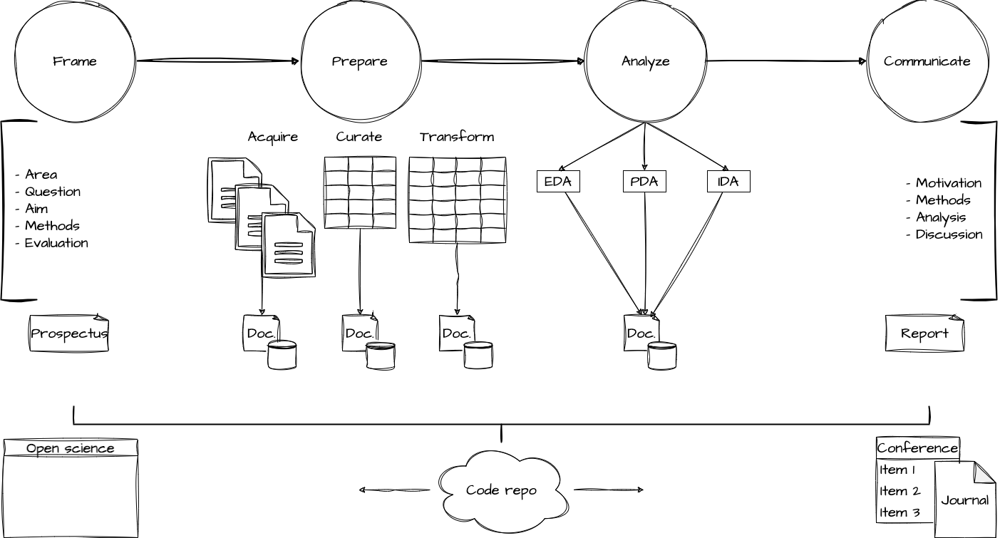
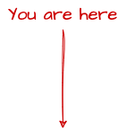

“All models are wrong, but some are useful.”
— George E.P. Box
Apr 3, 2024
tidymodels

Goals
When to use
How to use
In text analysis, features are often linguistic units (tokens).
But they can also be other types of variables such as metadata.
Or derived features.
tidymodelsA. Identify
B. Inspect
C. Interrogate
D. Interpret
| Variable | Type | Description |
|---|---|---|
gender |
Outcome | Aim to predict ‘female’ or ‘male’ |
text |
Predictor | Text data to predict gender |
LiblineaR, ranger)| Model | Family | Engine |
|---|---|---|
logistic_reg() |
Logistic regression | LiblineaR |
decision_tree() |
Decision tree | C5.0 |
random_forest() |
Random forest | ranger |
svm_linear() |
Support vector machine | LiblineaR |
Each model has hyperparameters that can be tuned to improve performance.
The logistic_reg() model has a penalty hyperparameter that controls the minimum number of observations in a node. Tuning this parameter and the max_tokens() filter will help the model generalize better.
Create a workflow that combines the recipe and model specification.
Choose the best hyperparameters and finalize the workflow.
Performance metrics: Measures of how well the model is doing
Classification
Regression
Our previous feature selection:
Update the workflow with the new recipe.
Update the grid and resampling.
Performance metrics: Measures of how well the model is doing
Our previous feature selection:
Update the workflow with the new recipe.
Update the grid and resampling.
Update the model specification. Let’s use a random forest model.
Update the grid and resampling.
tidymodels package provides a consistent and flexible framework for building and evaluating modelsPredict | Quantitative Text Analysis | Wake Forest University